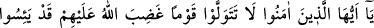
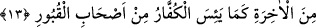

et, Allah’tan bağışlanmalarını dile.
13. Ey îman edenler! Kendilerine Allah’ın gazab ettiği bir kavmi dost edinmeyin.
Zira onlar, kâfirlerin kabirlerdekilerden (onların dirilmesinden) ümid kestikleri
gibi âhiretten ümid kesmişlerdir.
“Ey îman edenler! kendilerine Allah’ın gazab ettiği bir kavmi dost edinmeyin.”
Buradaki tevellî, dostluk ve sevgi anlamınadır. “Allah’ın gazab ettiği” ifâdesi kavmen
kelimesinin sıfatıdır. Kad yeisü ifâdesi de böyledir. Onlar, kendileri için âhirete âid
rahmetten bir rahmet bulunmayıp tamamı gazaba uğramış kimseler oldukları için bu
ifâde inkârcılar cinsinin tamamını kapsamaktadır. Gazaba uğrayanlardan maksad,
yahûdiler olduğu da söylenmiştir. Çünkü, ürünlerinden bir şeyler elde etmek için
yahûdilerle münasebet kuran bazı fakir müslümanlar hakkında bu âyet-i kerîme inmiştir.
Çoğunluğun görüşü de budur. Nitekim Allah Teâlâ yahûdier hakkında; “Allah’ın
lânetlediği ve azab ettiği, aralarında maymunlar, domuzlar ve tağûta tapanlar
çıkardığı kimseler” (el-Mâide, 5/60) buyurmuştur. Âyette geçen kavm ifâdesi ile
erkekler kasdedilmiştir. Çoğunlukla bu ifâdenin kapsamına erkeklere tâbi olmaları
yoluyla kadınlar da girmektedir. Çünkü, her peygamberin ümmeti erkek ve kadınlardan
oluşmaktadır.
“Zira onlar, kâfirlerin kabirlerdekilerden (onların dirilmesinden) ümid kestikleri
gibi âhiretten ümid kesmişlerdir.” Ye’s kelimesi, âhireti inkâr ve ona kesin olarak
inanmadıkları için ümidin kesilmesidir. Kavmen kelimesinden bütün inkârcıların
kasdedilmesi durumunda anlaşılan mânâ budur. Min harfi sınırın başlangıcını bildirmek
içindir. Yahut, âyetlerle mu’cizelerle güçlendirilmiş, Tevrat’ta vasıfları sayılmış
Peygamber’e inanmakta inad ettikleri için âhirette nasibleri bulunmadığını
bildiklerinden dolayı ümidlerini kesmişlerdir. Böyle bir mânâ ise, kavmen kelimesi ile
yahûdiler kasdedilmiş olması hâlinde anlaşılır. Takdir edilen kelime “âhiret sevabı”dır.
Yâni onlar kitap ehlidirler, kıyamet gününe inanırlar. Ancak hased ve inadlarından
dolayı inkâr üzerinde israr ettiklerinden âhiret sevabından ümidlerini kesmişlerdir.
Peygamberimiz (a.s.) şöyle buyurdu: “Ey Yahûdi topluluğu! Yazıklar olsun, Allah’tan
korkunuz, kendisinden başka ilah bulunmayan Allah’a yemin ederim ki, siz elbette
bilirsiniz ki, ben gerçekten Allah’ın Rasûlüyüm. Benim Hak ile size gönderilip
geldiğimi de bilirsiniz, o halde müslüman olun!”
Ashabu’l-kubur terkibinin başındaki min harfi küffar kelimesini açıklamakta,
inkârcıların onlardan olduklarını beyan etmektedir. Mânâ şöyledir: Âhiretin elem verici
azabı ile cezâlandıklarını ve ebedi nimetlerinden mahrum edildiklerini görüp gerçeği